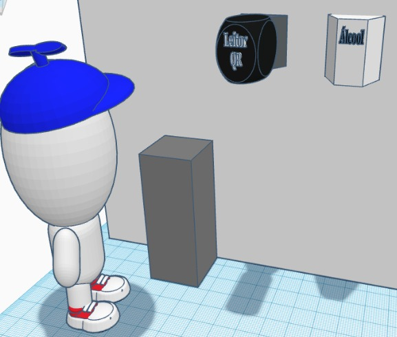
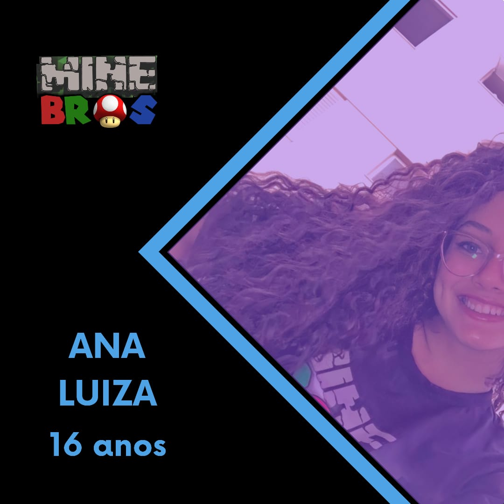
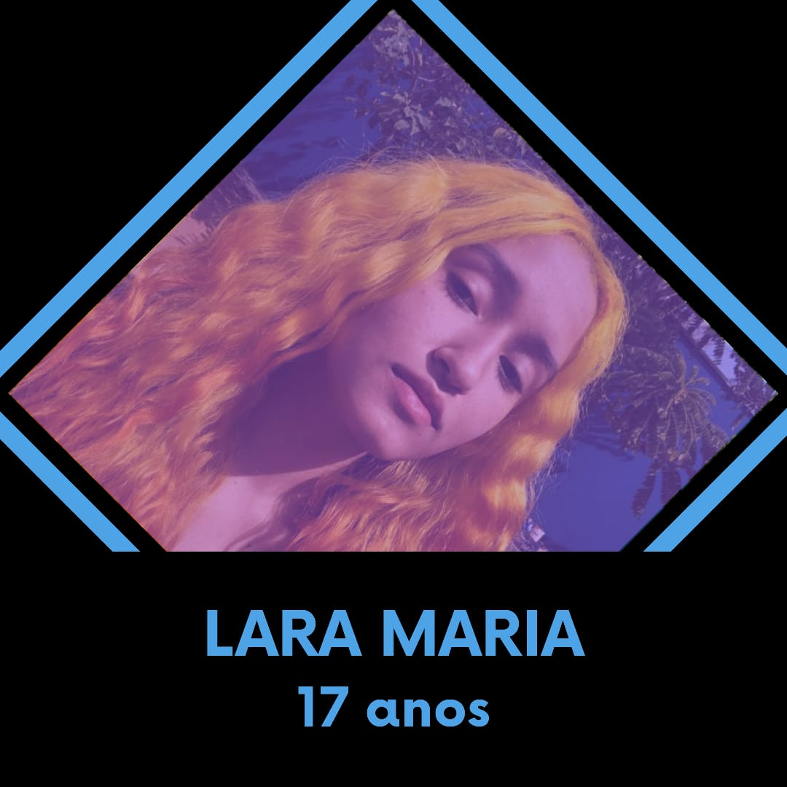

A metodologia IRIS
Identificando, rastreando, isolando e solucionando casos de Covid-19 nos ambientes escolares, para garantir maior segurança a seus frequentadores!
Começar
Sobre a iniciativa
Estando participando do Desafio Relâmpago - Volta às aulas, uma iniciativa do SESI Nacional, a equipe MineBros. precisa desenvolver uma solução para o retorno das aulas presenciais de forma segura, efetiva e inovadora.
Analisando as condições da pandemia no cenário atual e percebendo a necessidade de que cada aluno seja atencioso em seu cuidado e higienização, a MineBros encontrou a problemática descrita na pergunta a seguir: “Se o corpo escolar não confia em seus colegas para conviver com eles, como garantir que toda a comunidade acadêmica siga os protocolos básicos de proteção e seja informada caso tenha contato com pessoas que possuem suspeita ou que sejam confirmadas como vítimas da Covid-19?”.
Partindo dessa observação, ficou nítida a necessidade de assegurar uma forma de segurança entre o corpo escolar. Dessa forma, a solução proposta é baseada no principal fator que abranda o problema, e apresenta resultados efetivos. Percebe-se que os afetados pelo problema indicam, em pesquisa de coleta de dados, que o sistema de volta às aulas presenciais poderá ter maior efetividade e frequência, uma vez que o acesso aos ambientes só será permitido se as condições de proteção forem seguidas.
Atuação e funcionamento da proposta de solução
Para o desenvolvimento do que foi proposto, o projeto consiste na implantação de pontos de registro junto aos postos de higienização. Com essa estrutura, logo após o ato de descontaminar suas mãos com o álcool em gel, os alunos usarão seus cartões de identificação, com QR codes únicos, para confirmar esse processo nos leitores sem a necessidade de toque, o que também será monitorado por funcionários. Com essas informações, que serão guardadas por 7 dias em um banco de dados, e disponíveis para visualização pela coordenação geral das escolas, unicamente, será possível a geração de uma lista de frequência, o que otimiza o tempo que seria gasto em uma ação manual. Foi desenvolvido, então, um aplicativo com interface própria para tal controle.
Ainda, com o período de longevidade dos dados, será possível que, ao perceber que alguma pessoa se contaminou, seja realizado um rastreamento de seus passos, com a ajuda dos registros nos pontos, para uma identificação de possíveis novos frequentadores da escola com suspeita de contaminação, por ter convivido nos mesmos ambientes que o paciente. A partir desse estudo, esses casos poderão ser tratados com um isolamento das informações, para garantir uma não exposição das pessoas. Ao fim desse processo, o método IRIS (Identificar, Rastrear, Isolar e Solucionar) será aplicado e permitirá uma maior segurança no ambiente escolar, identificando, rastreando, isolando e solucionando os casos que causem desconforto para os corpos docentes, discentes e de trabalhadores gerais.

Vantagens da implantação
A solução apresenta originalidade na aplicação de suas adições, uma vez que não foi encontrado no mercado atual soluções realmente efetivas para os problemas identificados. Destacando as diferenças e melhorias da solução da equipe, pode-se citar o acompanhamento e controle da higienização pessoal de cada pessoa, além da possibilidade de rastreamento de casos e contaminação sem constrangimento, a criação do registro sem a necessidade que os usuários toquem o equipamento, e a otimização do tempo utilizado para geração de frequência de alunos e profissionais.
Além disso, destaca-se sua fácil replicação em vários tipos de escola, por sua estrutura simples e seu preço acessível. Os leitores de QR Code via Wireless possuem um custo em média de R$740,00, enquanto os cartões de PVC que terão o código dos alunos saem a R$2,85 a unidade. Se tratando do software em conjunto ao banco de dados que manterá os registros salvos, foi pesquisado o preço do modelo mais adequado, sendo este o em nuvem que possui o valor variante de R$300,00 a R$700,00 dependendo da demanda necessária para a instituição. Ademais, ao contar com parcerias, a implantação do método IRIS torna-se mais atraente e ainda mais efetiva.
A MineBros
A nossa equipe é formada inteiramente por garotas, que são apaixonadas pelo mundo STEM (Ciências, Tecnologia, Engenharia e Matemática) e pela robótica educacional. Elas contam com experiências passadas em outras competições, como a First Lego League, a Olimpíada Brasileira de Robótica e o Desafio Covid-19, organizado pelo SESI Nacional. Agora, elas aceitaram o compromisso e desenvolveram essa solução para garantir uma volta às aulas presenciais mais segura, efetiva e inovadora.

